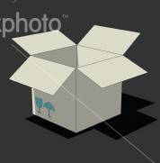
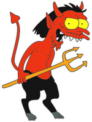

|
|
|
Sponsored Link •
|
Summary
My series against mixins continues. This time I consider using proxies instead of mixins, and I pose a design problem which will be solved in the last issue.
|
Advertisement
|
In recent years I have become an opponent of multiple inheritance and mixins, for reasons which I have discussed at length in the first and second paper of this series: namespace pollution, insufficient separation of concerns, fragility with respect to name clashes, complication of the method resolution order, non scalability of the design and even simple conceptual confusion with the is a relation.
Moreover, I have argued that mixins are the wrong tool for the job: if you need a method to be mixed into different classes, then you are better off not mixing it, putting it at toplevel and promoting it to a multimethod/generic function.
Nevertheless, a lot of people think that mixins are very cool and a lot of new languages present mixins as the panacea to all evil in object oriented design. This is the reason why I have started this series, which is intended to make developers using languages which features multiple inheritance or mixins think.
In my view there are at least three possible attitudes for a developer using a language with mixins (say Python):
Resignation
Acknowledge that since the language allows mixins and they are used by many frameworks, they will never go away. Therefore one should focus on discovering workarounds to cope with the situation, like the warn_overriding decorator that I introduced in the first article of this series; one can also write better introspection tools to navigate though mixins (the issue with pydoc is that it give too much information);
Education
We (the "experts") should make an effort to communicate to the large public the issues with mixins and try to convince framework authors to use alternative designs. That is what I am trying to accomplish with this series.
Research
Study better implementations of the mixin idea: even if there is no hope for the language you are using, research is not useless since it may be implemented in languages yet to be written. Python itself can be used as an experimentation language, as I show in my strait module, where I pervert the Python object system to become a single inheritance + traits object system, instead of a multiple inheritance system. In the fourth paper of this series I will show yet another approach, by implementing the mixin idea in terms of composition and not of inheritance.
While I think that multimethods are the right way to solve the problem that mixins are tring to solve, the solution of defining functions outside classes and leveraging on multiple dispatch is a radical departure from the traditional style of object oriented programming, which is based on single dispatch and methods defined inside classes.
If you want to keep single dispatch, then there is basically only one way to avoid inheritance, i.e. to replace it with composition, possibly by adding delegation to the mix. The practical implementations of this idea are very different and one can think of many ways to replace inheritance with composition.
The strait module for instance just inject methods in a class directly (provided they satisfy some checks) and as such it is a not a big improvements with respect to inheritance: the advantages are in the protection against name clashes and in the simplication of the method resolution order. However, one could argue that those advantages are not enough, since the namespace pollution problem is still there.
An alternative solution is to use composition plus delegation, i.e. to make use of proxies. For instance, in the case discussed in the second paper of this series, we could have solved the design problem without using multiple inheritance, just with composition + delegation:
class PictureContainer(DictMixin):
"PictureContainer is a proxy to the underlying SimplePictureContainer"
from utility import log
def __init__(self, id, pictures_or_containers):
self._pc = SimplePictureContainer(id, pictures_or_containers)
self.data = self._pc.data # avoids an indirection step
def __getitem__(self, id):
return self.data[id]
def __setitem__(self, id, value):
self.log.info('Adding or replacing %s into %s', id, self.id)
self.data[id] = value
def __delitem__(self, id):
self.log.warn('Deleting %s', id)
del self.data[id]
def keys(self):
return self.data.keys()
def __getattr__(self, name):
return getattr(self._pc, name)
Thanks to the __getattr__ trick, PictureContainer is now a proxy to a SimplePictureContainer and all the methods of SimplePictureContainer are available to PictureContainer, on top of the methods coming from DictMixin: we did basically fake multiple inheritance without complicating the hierarchy.
A disadvantage of PictureContainer is that its instances are no more instances of SimplePictureContainer, therefore if your code contained checks like isinstance(obj, SimplePictureContainer) (which is a very bad practice, at least for Python versions below Python 2.6) the check would fail. The problem has been solved in Python 2.6 thanks to the Abstract Base Class mechanism (ABC); it is enought to register SimplePictureContainer as an ABC of PictureContainer and you are done.
I like proxies because the cognitive load of a proxy - an object dispatching to another method - is much smaller than the cognitive load imposed by inheritance.
If I see an object which is an instance of a class, I feel obliged to know all the methods of that class, including all the methods of its ancestors, because I could override them accidentally.
On the other hand, if an object is a proxy, I just note in my mind that it contains a reference to the proxied object, but I do not feel obliged to know everything about the proxied object; it is enough for me to know which methods are called by the proxy methods, if any. It is more of a psychological effect, but I like proxies since they keep the complexity confined, whereas inheritance exposes it directly.
I should notice that if the proxy has a method which accidentally shadows a method of the underlying object, nothing particularly bad happens. That method will not work, but the other methods will keep working, since they will call the methods of the original object. In inheritance instead, an accidental overriding may cause havoc, since other methods of the object may call the accidentally overridden method, with errors appearing in apparently unrelated portions of code.
As well as I like proxies, they are not perfect. I can see two problems with them: they slowdown attribute access quite a lot (this a performance problem, therefore not something that should concern a Pythonista a lot) and they are pretty opaque, since they hide the underlying object quite a lot (this is a feature, of course, but sometimes you would prefer to be more explicit). Moreover, if you have a complex problem, you do not want to solve it onion-style, by using proxies to proxies to proxies.
Since I do not like to talk in abstract, let me refer to the PictureContainer example again.
The class PictureContainer inherits from DictMixin and I said that this is good since DictMixin provided only 19 attributes (you can see them with dir(DictMixin)) which are well known to everybody knowing Python dictionaries, therefore the cognitive load is null. The problem begins when you decide that you need to add features to PictureContainer.
For instance, if we are writing a GUI application, we may need methods such as set_thumbnails_size, get_thumbnails_size, generate_thumbnails, show_thumbnails, make_picture_menu, show_picture_menu, et cetera; let us say we need 50 GUI-related methods or more (methods to set parameters, methods to make menus, buttons, auxiliary methods and more). We could include all those methods into a mixin class called GUI and we could inherit from both DictMixin and GUI.
That's all good. However, suppose version 2.0 of our application is required to be available through a Web interface; we may therefore need to implement the 8 methods of the HTTP protocol (HEAD, GET, POST, PUT, DELETE, TRACE, OPTIONS, CONNECT) into another mixin class. Moreover, if we want to give the ability to edit the images to our users, we may need to implement a WebDAV interface too, with 7 additional methods PROPFIND, PROPPATCH, MKCOL, COPY, MOVE, LOCK, UNLOCK.
On the other hand, there are users who may prefer the old FTP protocol to transfer the pictures and therefore we would need to implemente 43 other methods (ABOR, ALLO, APPE, CDUP, CWD, DELE, EPRT, EPSV, FEAT, HELP, LIST, MDTM, MLSD, MLST, MODE, MKD, NLST, NOOP, OPTS, PASS, PASV, PORT, PWD, QUIT, REIN, REST, RETR, RMD, RNFR, RNTO, SIZE, STAT, STOR, STOU, STRU, SYST, TYPE, USER, XCUP, XCWD, XMKD, XPWD, XRMD). Finally, we will need a few authorization-related methods (is_admin, is_logged_user, is_anonymous_user, is_picture_owner, is_friend_of, eccetera), let's say 20 methods to be stored into another mixin class AUTH.
Now we are left with six mixin classes (DictMixin, GUI, HTTP, WEBDAV, FTP, AUTH) and a total of at least 20 (from DictMixin) + 50 (from GUI) + 8 (from HTTP) + 7 (from WEBDAV) + 44 (from FTP) + 20 (from AUTH) = 148 methods coming from the mixin classes. To those methods you may add the methods coming from the PictureContainer class. This is not nice, especially if you think that in future versions you may need to support yet another interface and more mixin methods. In my estimate I have been conservative, but it is easy to reach hundreds of methods. This scenario is exactly what happened in Zope/Plone.
It is clear that making a six level proxy of proxy wrapping a set of methods over the other is not a better solution than using mixins. Using traits would not be better either. One must ask if there are alternative designs that avoid the overpopulation problem. The answer is yes, of course, but in order to keep the suspence up, I will not show any solution to this design problem in this issue. I leave it for my next (and last) paper on the subject, so that you have some time to come up with a solution of your own ;)
to be continued ...
Have an opinion? Readers have already posted 1 comment about this weblog entry. Why not add yours?
If you'd like to be notified whenever Michele Simionato adds a new entry to his weblog, subscribe to his RSS feed.
 | Michele Simionato started his career as a Theoretical Physicist, working in Italy, France and the U.S. He turned to programming in 2003; since then he has been working professionally as a Python developer and now he lives in Milan, Italy. Michele is well known in the Python community for his posts in the newsgroup(s), his articles and his Open Source libraries and recipes. His interests include object oriented programming, functional programming, and in general programming metodologies that enable us to manage the complexity of modern software developement. |
|
Sponsored Links
|